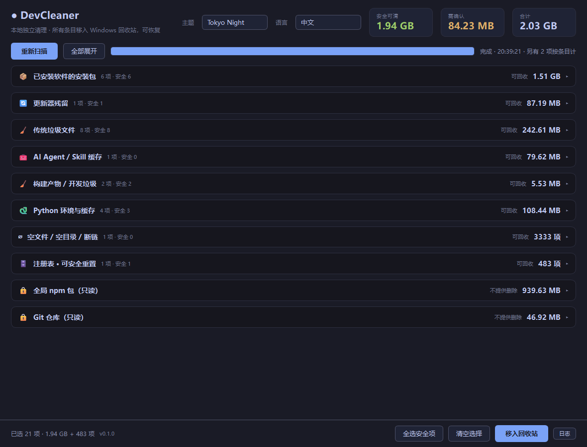

一个会把自己的判据摊开给你看的清理工具。十类判据驱动的扫描器， 文件进回收站，注册表删前先备份 —— 每一条旁边都写清楚为什么。

每一条都带着触发它的那个信号 —— 进程名、卸载项、远程地址。证不了一个文件是死的，它就不动。
安装包只有在「产品名对得上」并且进程、安装目录、卸载注册表三者之一确认已安装时才进列表。单一信号不算数。
删除走 SHFileOperation + FOF_ALLOWUNDO。周二手滑，周三还在回收站里。
注册表键先导出成 .reg 再删。导出失败就拒绝删除 —— 绝不悄悄改你的注册表。
带 remote 的 Git 仓库永远不进可删列表。只有没有远程地址的本地 clone 才会被考虑。
过期临时文件要先满足最小天数。被运行中的进程占着的，会跳过并报告，不会硬来。
右上角切换中英文。配色对比度按 WCAG AA 校验过。全程离线，一个网络请求都不发。
字节没意义的按条目数显示 —— 注册表和空文件这两类显示条目数量，不拿假 gigabyte 糊弄你。
清理工具只有在你的机器上值得信任时才有用。
.reg，导出失败就拒绝删除。还原执行 reg import。C:\Windows、Program Files 和系统临时目录。右上角切换，选择直接写回 settings.yaml，重启还在。
许可：CC BY-NC 4.0 — 可以修改和二次开发， 必须署名 Matou1118，不允许商用。 条款全文 · Full terms